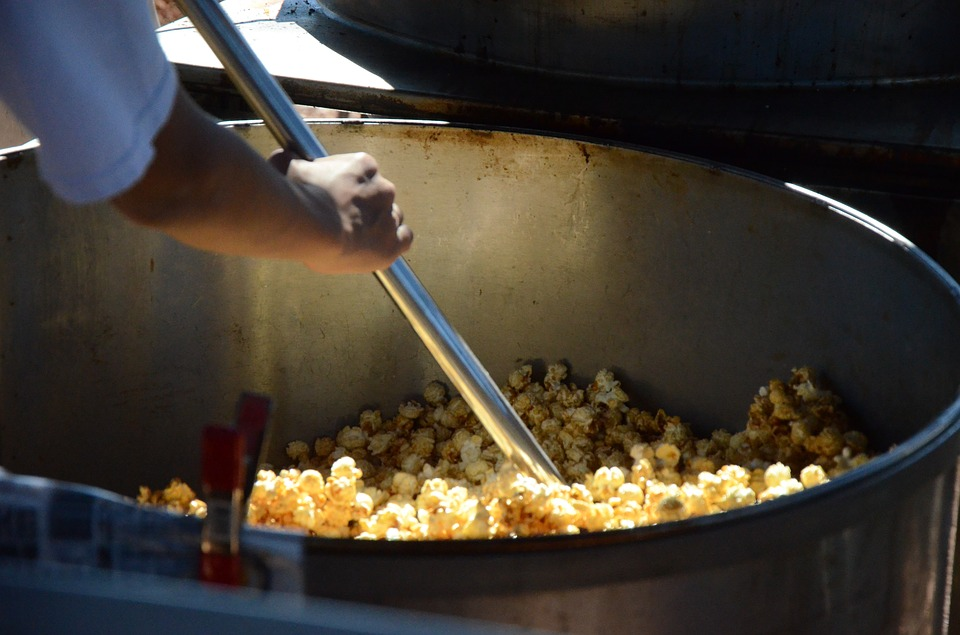

Kettle Corn Recipe

Description
This recipe for kettle corn is a staple around Labor Day and
Halloween! The popcorn has to be popped, and we usually do it on the
weekend, but you can do it any day that you have enough free time.
And because it's a favorite of mine, I'm sharing it here. It's
really easy to make, and it's so delicious!
Ingredients
- 1/4 cup vegetable oil
- 1/4 cup white sugar
- 1/2 cup unpopped popcorn kernels
Steps
- Heat the vegetable oil in a large pot over medium heat.
- Once hot, stir in the sugar and popcorn.
- Cover, and shake the pot constantly to keep the sugar from
burning.
- Once the popping has slowed to once every 2 to 3 seconds, remove
the pot from the heat and continue to shake for a few minutes
until the popping has stopped.
- Pour into a large bowl, and allow to cool, stirring
occasionally to break up large clumps.
- Enjoy!